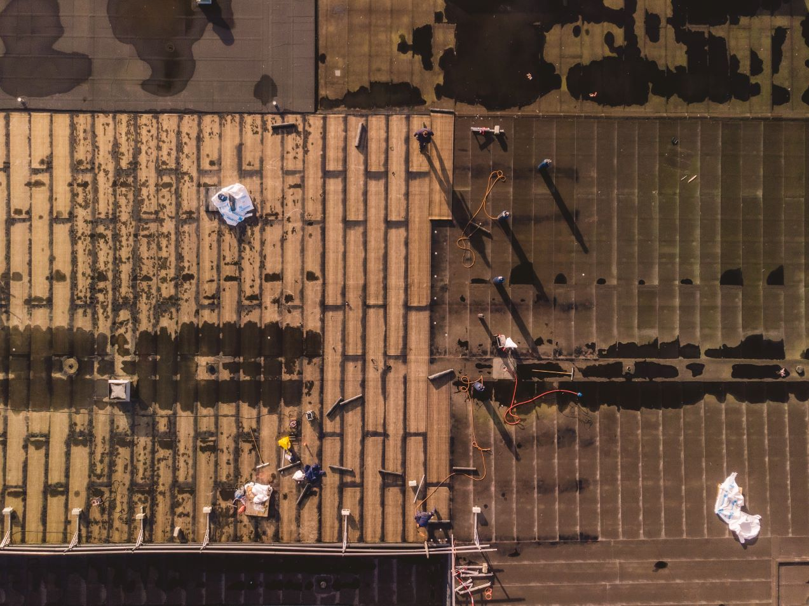
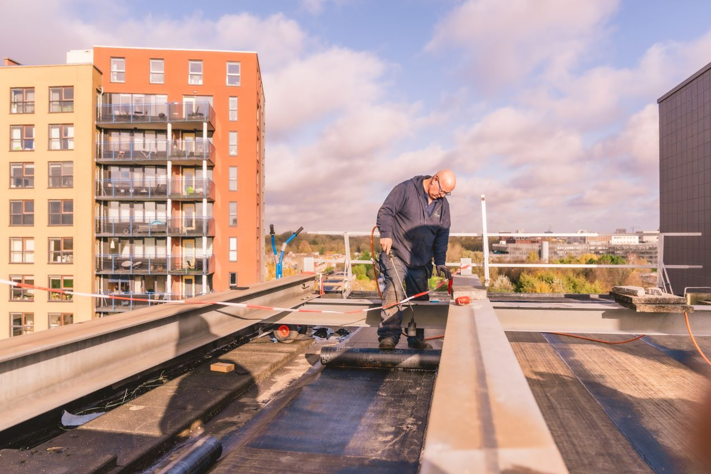
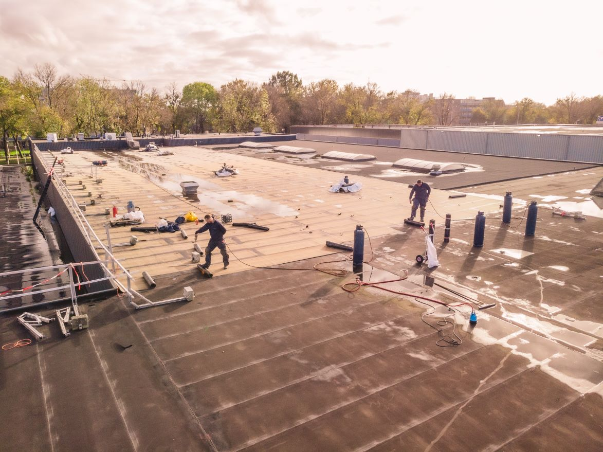

Dakdekker in Ede
Weet hoe uw dak erbij ligt.
Dakmanagement inspecteert, adviseert en voert uit, met eigen vakmensen. U ziet op foto's wat er speelt, en bij lekkage belt u ons dag en nacht.
4,5 sterren uit 8 Google-reviews
Lekt uw dak? Bel gerust, ook midden in de nacht.
Ook een kleine lekkage moet weg: waterschade is vaak onherstelbaar en de kosten lopen snel op. Is er meer aan de hand, dan laten we u met een fotorapportage zien wat er speelt.
24 uur per dag, 7 dagen per week bereikbaar.
Alleen onze kennis, of ook onze handen.
U kiest zelf hoe ver u gaat. We werken vooral voor gebouwenbeheerders, beleggers, woningcorporaties, bedrijven en overheid, aan platte en hellende daken.
Als raadgever
U maakt alleen gebruik van onze kennis. Ons advies krijgt u in een gedetailleerde rapportage, die u ook online kunt bekijken.
- Inspectie en inventarisatie van uw daken
- Meerjarenonderhoudsplanning (MJOP)
- Schadeonderzoek
- Beoordelen van onderhoudsmethoden
- Conditie van een dak bij aankoop van een pand
Als uitvoerder
Maatwerk op basis van wat we op uw dak aantreffen. We werken met eigen personeel, zodat er geen informatie verloren gaat onderweg.
- Dakrenovaties, ook van hellende daken
- Lood zetten en spouwlood
- Zink en dakpannen
- Daktuinen
- Zonnepanelen, energie- en milieubesparende maatregelen

Eerst op het dak. Dan pas een offerte.
-
We gaan het dak op
We verzamelen de gegevens ter plekke en leggen op foto vast hoe uw dak erbij ligt.
-
We nemen de tijd voor een gesprek
Ruim en verhelderend. U hoort objectief hoe het zit.
-
U krijgt plannen van aanpak
Meestal meerdere, met de consequenties van elke keuze erbij.
-
Daarna volgt de offerte op maat
Helder en technisch, zo nodig onderbouwd met een bouwfysische of windbelastingberekening.
-
Onze eigen mensen voeren uit
De werkomschrijving uit de offerte is ook hun werkbrief. Zo leiden afspraken niet tot misverstanden.
Uw daken, altijd online in te zien.
Met Online Dakmanagement ziet u de actuele stand van zaken van al uw daken. Ook een lekkage melden of een offerte aanvragen doet u daar.
Inloggen op Online DakmanagementWat u er terugvindt
- Inspectierapporten
- Tekeningen
- Inspectiefoto's met omschrijving
- Inventarisatierapporten en RI&E's
- Wateraccumulatierapporten
- Meerjarenbegrotingen
- Meldingen en opvolging
- Actieplannen
- Offertes
- Facturen
Meer dan dakbedekking alleen.

Wateraccumulatie
Loopt regenwater niet snel genoeg weg, dan blijft het op een plat dak staan. Het dak vervormt onder het gewicht, er komt nog meer water bij en uiteindelijk kan de constructie bezwijken.
Wij maken de berekening en brengen de aanpassingen aan: extra hemelwaterafvoeren, noodafvoeren, afschot of versteviging van de onderconstructie.
Onderhoudsovereenkomst
Elk jaar inspecteren en reinigen we uw dak, en voeren we zo nodig kleine reparaties uit. De fotorapportage ziet u daarna online.
Rookproef
We blazen rook onder de dakbedekking en kijken waar die naar buiten komt. Zo vinden we een lek, hoe klein ook.
Veilig op het dak
Risico-inventarisatie en -evaluatie (RI&E), ankerpunten, kabelsystemen, markeringen, hekwerk en gevel- of kooiladders. Geleverd en gemonteerd.
4,5 sterren uit 8 Google-reviews
"Vakmannen, leveren echt super werk. Ruimen alles ook netjes op als ze klaar zijn valt niks over te zeggen!"
"Jeroen en zijn team zijn van alle markten thuis. Prima werk geleverd. Top mannen, bedankt."
"Inmiddels al een aantal daken met Dakmanagenent gedaan. Werken netjes, zijn direct en leveren vakmanschap. Dat laatste is echt goed te zien."
"Prima werk geleverd...we zijn goed tevreden"
Wilt u weten hoe het ervoor staat?
Neem vrijblijvend contact op voor een afspraak, een offerte of meer informatie.
- Telefoon
- 036 521 8040, elke dag 24 uur geopend
- info@dakmanagement.nl